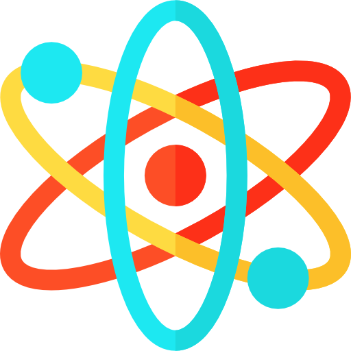

<!--
  Generated template for the LoginPage page.

  See http://ionicframework.com/docs/components/#navigation for more info on
  Ionic pages and navigation.
-->


<ion-content padding>
  <div style="position: relative; top: 50%; transform: translateY(-50%);">
    
    <h1 text-center style="font-weight: 700;margin-bottom: 100px;color:white">LabGenius</h1>
    <button style="margin-top: 10px;font-weight: 700;width:80%;height: 50px;position: relative;left:50%;transform: translateX(-50%);" color="light" ion-button round outline block (click)="cadastrar()">CRIAR CONTA</button>
    <button style="margin-top:1.5em;font-weight: 700;width:80%;height: 50px;position: relative;left:50%;transform: translateX(-50%);" color="light" ion-button round block (click)="aluno()">ENTRAR</button>
  </div>
</ion-content>
